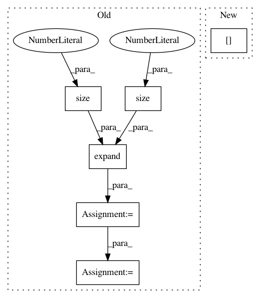

5e148038be5971f2c7c811d46a1d7b28c759ecda,layers/common_layers.py,GravesAttention,forward,#GravesAttention#Any#Any#Any#Any#,144
Before Change
g_t = torch.softmax(g_t, dim=-1) / sig_t + self.eps
// each B x K x T_in
g_t = g_t.unsqueeze(2).expand(g_t.size(0),
g_t.size(1),
inputs.size(1))
sig_t = sig_t.unsqueeze(2).expand_as(g_t)
mu_t_ = mu_t.unsqueeze(2).expand_as(g_t)
j = self.J[:g_t.size(0), :, :inputs.size(1)]
// attention weights
After Change
// discritize attention weights
alpha_t = self.COEF * torch.sum(phi_t, 1)
alpha_t = alpha_t[:, 1:] - alpha_t[:, :-1]
// apply masking
if mask is not None:
In pattern: SUPERPATTERN
Frequency: 3
Non-data size: 6
Instances
Project Name: mozilla/TTS
Commit Name: 5e148038be5971f2c7c811d46a1d7b28c759ecda
Time: 2020-01-09
Author: root@sp-mlc3-5423-0.mlc
File Name: layers/common_layers.py
Class Name: GravesAttention
Method Name: forward
Project Name: Zhaoyi-Yan/Shift-Net_pytorch
Commit Name: dc9aafd83851f7c55c6fe61702e281856ec023ca
Time: 2018-12-13
Author: yanzhaoyi@outlook.com
File Name: models/accelerated_shift_net/accelerated_InnerShiftTripleFunction.py
Class Name: AcceleratedInnerShiftTripleFunction
Method Name: forward
Project Name: geomstats/geomstats
Commit Name: d5398270501cd5d6e9880db5e15ebf407ddec5ee
Time: 2020-04-03
Author: hadizaatiti@gmail.com
File Name: examples/plot_expectation_maximisation_manifolds.py
Class Name:
Method Name: weighted_gmm_pdf